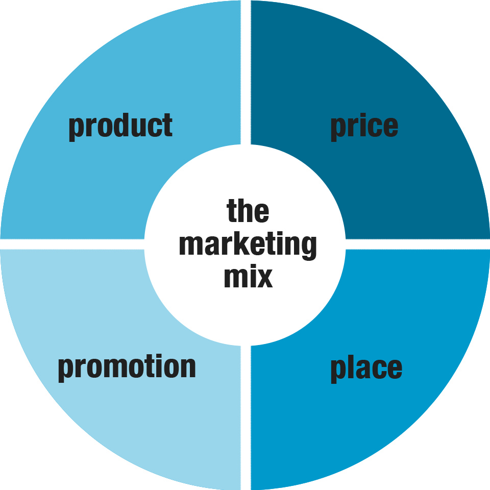
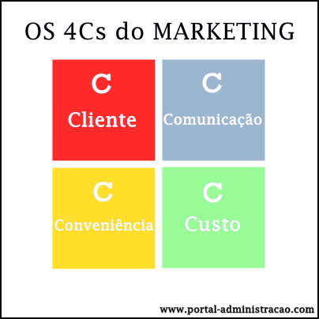
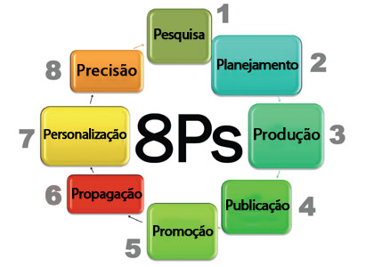

Para entendermos o que é Marketing Digital precisamos entender, antes de tudo, o que é Marketing, seus conceitos básicos como os 4Ps e os 4Cs. Além disso, entender a definição de Marketing Digital em si e como aplicá-lo, por exemplo, usando os 8Ps.
O que é Marketing?
Marketing é o conjunto de ações, estrategicamente formuladas (como: pesquisas de mercado, design, campanhas publicitárias, atendimentos pós-venda), que visam influenciar o público quanto a determinada ideia, instituição, marca, pessoa, produto, serviço etc. Resumidamente, como diz Philip Kotler: "Marketing é atividade dirigida para satisfazer necessidades e desejos por meio de troca". Outra maneia fácil de entender e classificá-lo é por seus 4Ps.
Os 4Ps são os pilares do Marketing. Foram criados por Jerome McCarthy e desenvolvidos por Philip Kotler e são:
- Produto: definição dos aspectos relacionados ao produto ou serviço, como por exemplo: o físico, a utilidade, o nome;
- Preço: abrange o quanto o cliente irá pagar mais o lucro que a empresa terá com produto;
- Praça: pode-se definir pelo lugar onde o cliente encontrará e poderá adquirir o produto;
- Promoção: refere-se às atividades de divulgação, incluindo publicidade, anúncios patrocinados, marketing direto, merchandising etc.
O que é Marketing Digital?
Marketing Digital consiste nas estratégias de Marketing aplicadas no meio online, utilizando a internet. Essa diferença, que parece pequena, trouxe grandes mudanças e os 4Ps foram evoluídos para os 4Cs.
Fonte: Portal Administração
Os 4Cs do Marketing foram desenvolvidos por Robert Lauterborn, mostram uma estratégia voltada ao cliente e são:
- Cliente: veio em contrapartida com o produto. No Marketing digital é importante saber as necessidades do cliente, seus gostos, poder aquisitivo;
- Custo: deve-se ver além do preço do produto ou serviço, tem que contar também o valor do produto para o cliente, os gastos que ele terá para adquiri-lo, como: com estacionamento, internet etc.;
- Conveniência: uma palavra-chave que resume é praticidade. O quão acessível está seu produto, quanto tempo demora para o cliente tê-lo em mãos são coisas a serem pensadas;
- Comunicação: está diretamente ligada ao primeiro C (Cliente) e consiste na comunicação entre o vendedor e o comprador. Produzir uma propaganda divertida, usar de influenciadores como meios são uma boa alternativa para ter sucesso nesse C;
Não é novidade que a Internet trouxe imensas mudanças em nossa sociedade. Agora, o mundo está conectado a uma rede onde pode-se socializar, fazer pesquisas, assistir a aulas, filmes e vídeos, pedir comida entre muitos outros recursos. Hoje, as pessoas têm um maior banco de dados para pesquisar sobre seu produto, antes de comprá-lo, compram as informações, a ideia, as avaliações dele. Quem quer anunciar, precisar tem uma série de cuidados para obter sucesso, uma “fórmula” para esse êxito é o ciclo dos 8Ps do Marketing Digital.
Fonte: Lorena Sampaio
Os 8Ps do Marketing Digital foram desenvolvidos por Conrado Adolpho em seu livro de mesmo nome e consistem em:
- Pesquisa: é preciso fazê-la antes, durante e depois de lançar seu produto. É importante saber onde você está inserido, que tipo de pessoas vai atingir para elaborar como e o que vai colocar ali;
- Planejamento: depois de pesquisar, já há uma ideia de como vai ingressar naquele meio, só precisa planejar direito;
- Produção: precisa ser pensada e feita por um especialista na área, para que o produto se torne atrativo o suficiente para render resultados positivos;
- Publicação: finalizado seu projeto bem produzido e pesquisado, pode colocá-lo no ar;
- Promoção: esta é uma promoção voltada à propagação. Fazer um bom produto ou conteúdo faz com que seja mais compartilhado. A promoção não pode depender apenas do vendedor, deve ser bem planejada;
- Propagação: desenvolver interação com a rede, fazer com que sites, blogs falem bem de você. Promoção e Propagação devem sempre andar juntas;
- Personalização: falar diretamente com o usuário, se personalizar para atingir mais e melhor atender;
- Precisão: o último P caminha junto ao primeiro. A precisão é constituída por pesquisa e personalização. Deve-se pesquisar sobre o que falam de seu produto, quem adquiriu e se modificar com precisão para aumentar seu alcance e melhorar seu atendimento. Após isso, pesquisar de novo para ter certeza que seu objetivo foi alcançado e se não, personalizar de novo e assim completando o ciclo dos 8Ps;